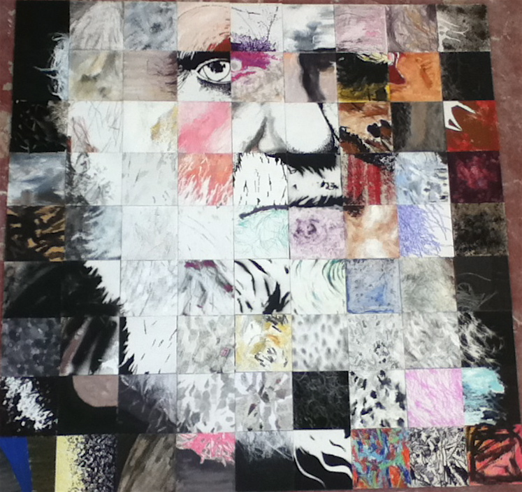
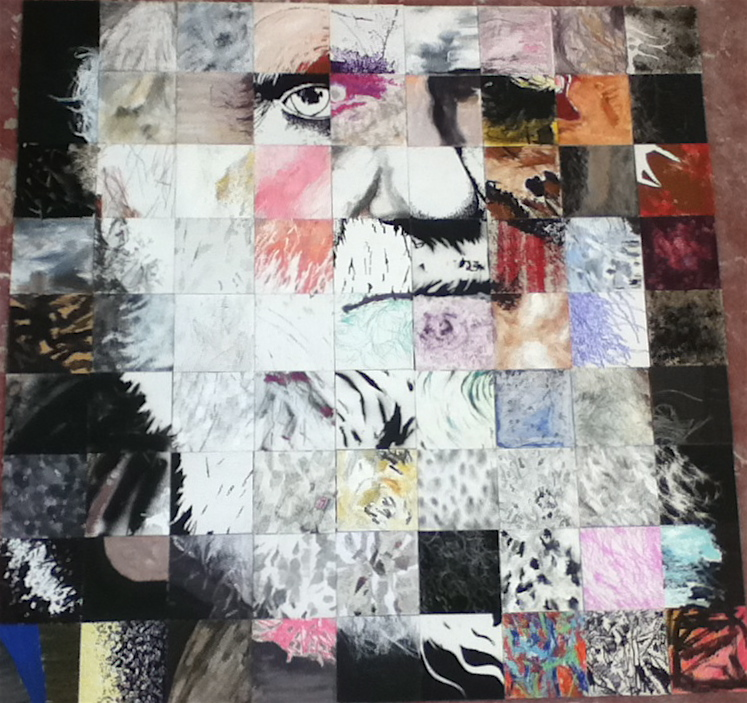
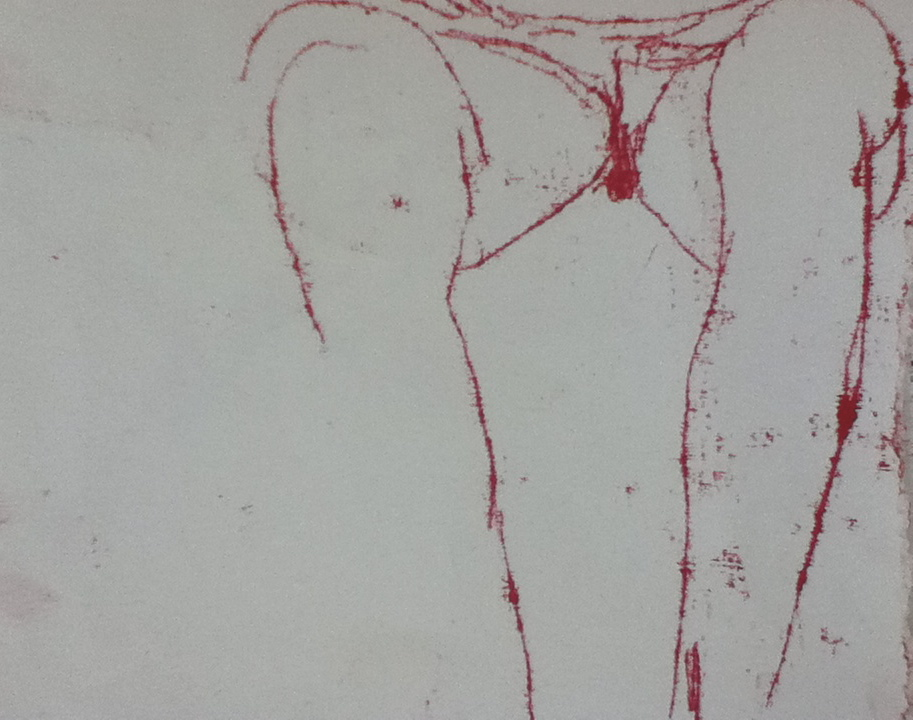
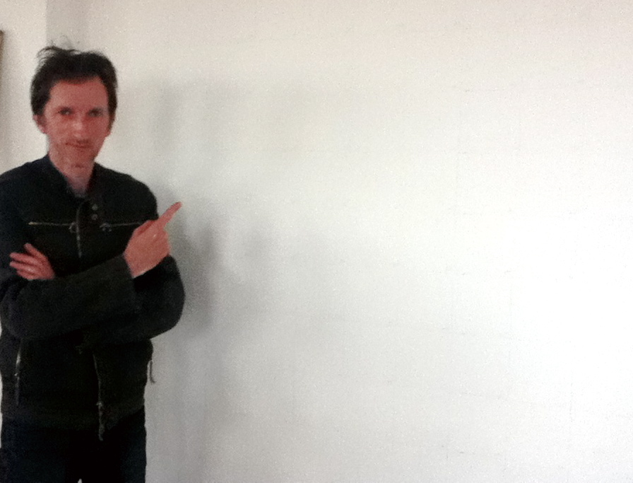

Darwin
this is what he looks like… we think he is really cool…
Fine artist who specialises in drawing and painting.
this is what he looks like… we think he is really cool…
tonight its the opening of…. Emerging female artists from the Attic, at the Red Tent in Leicester! not the red door… silly me
and then next friday, 2nd Sept, its the MA show, preview night at De Montfort Uni, with loads of wine and my two massive paintings … come see!!
And I am stuck in rainy Melbourne wishing i was at Leeds festival……

the attic girlies are exhibiting at the Red Door at the end of August
apparently we are making a non aggressive statement about female artists in a male dominated industry…..hmmm not sure i am, but its good to get some work seen!
had a little play with the “exposed” idea… back into the struggle and strife stuff. Really enjoying the accidents that happen
me and kevin have done the gridding out on my wall at the studio and are ready to start…its a secret, well.. we aren’t sure how its going to work out but its going to be mental and fun!!
Saturday met with Kevin Blair my buddy who is a super duper drawing man….he has an exhibition at the Exchange in Leicester at the mo, and i bought one of his prints, a great bird monoprint. We are going to be working together on the attic by project, a drawing collaboration, over the next few weeks… watch this space!
I really cracked on with some drawings last Thursday, mono prints on pieces of plaster board … hmmm … but it works ok actually.